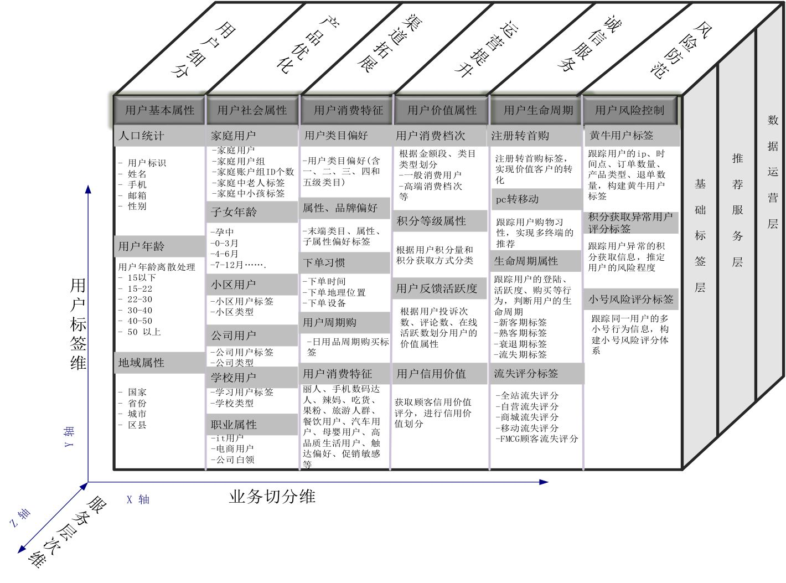

<!DOCTYPE html>
<html lang="zh-CN" data-default-color-scheme=&#34;dark&#34;>


<head>
  <meta charset="UTF-8">
  <link rel="apple-touch-icon" sizes="76x76" href="/img/favicon.png">
  <link rel="icon" href="/img/favicon.png">
  <meta name="viewport"
        content="width=device-width, initial-scale=1.0, maximum-scale=1.0, user-scalable=no, shrink-to-fit=no">
  <meta http-equiv="x-ua-compatible" content="ie=edge">
  
  <meta name="theme-color" content="#2f4154">
  <meta name="description" content="记录自己的每一步">
  <meta name="author" content="windism">
  <meta name="keywords" content="">
  
  <title>用户画像的基础-如何标记用户 - 风扬</title>

  <link  rel="stylesheet" href="https://cdn.staticfile.org/twitter-bootstrap/4.5.3/css/bootstrap.min.css" />


  <link  rel="stylesheet" href="https://cdn.staticfile.org/github-markdown-css/4.0.0/github-markdown.min.css" />
  <link  rel="stylesheet" href="/lib/hint/hint.min.css" />

  
    
    
      
      
        
          
          
          
        
        <link  rel="stylesheet" href="https://cdn.staticfile.org/prism/1.22.0/themes/prism-tomorrow.min.css" />
      
      
        <link  rel="stylesheet" href="https://cdn.staticfile.org/prism/1.22.0/plugins/line-numbers/prism-line-numbers.min.css" />
      
    
  

  


<!-- 主题依赖的图标库，不要自行修改 -->

<link rel="stylesheet" href="//at.alicdn.com/t/font_1749284_ba1fz6golrf.css">


<link rel="stylesheet" href="//at.alicdn.com/t/font_1736178_kmeydafke9r.css">


<link  rel="stylesheet" href="/css/main.css" />

<!-- 自定义样式保持在最底部 -->


  <script id="fluid-configs">
    var Fluid = window.Fluid || {};
    var CONFIG = {"hostname":"www.windism.cn","root":"/","version":"1.8.10","typing":{"enable":true,"typeSpeed":70,"cursorChar":"_","loop":false},"anchorjs":{"enable":true,"element":"h1,h2,h3,h4,h5,h6","placement":"right","visible":"hover","icon":""},"progressbar":{"enable":true,"height_px":3,"color":"#29d","options":{"showSpinner":false,"trickleSpeed":200}},"copy_btn":true,"image_zoom":{"enable":false,"img_url_replace":["",""]},"toc":{"enable":true,"headingSelector":"h1,h2,h3,h4,h5,h6","collapseDepth":0},"lazyload":{"enable":true,"loading_img":"/img/loading.gif","onlypost":false,"offset_factor":2},"web_analytics":{"enable":true,"baidu":"6738967de23b633d742eb1f8b34d0967","google":"UA-138227081-2","gtag":null,"tencent":{"sid":null,"cid":null},"woyaola":null,"cnzz":null,"leancloud":{"app_id":null,"app_key":null,"server_url":null}}};
  </script>
  <script  src="/js/utils.js" ></script>
  <script  src="/js/color-schema.js" ></script>
<meta name="generator" content="Hexo 5.4.0"><link rel="alternate" href="/atom.xml" title="风扬" type="application/atom+xml">
</head>


<body>
  <header style="height: 70vh;">
    <nav id="navbar" class="navbar fixed-top  navbar-expand-lg navbar-dark scrolling-navbar">
  <div class="container">
    <a class="navbar-brand"
       href="/">&nbsp;<strong>风扬</strong>&nbsp;</a>

    <button id="navbar-toggler-btn" class="navbar-toggler" type="button" data-toggle="collapse"
            data-target="#navbarSupportedContent"
            aria-controls="navbarSupportedContent" aria-expanded="false" aria-label="Toggle navigation">
      <div class="animated-icon"><span></span><span></span><span></span></div>
    </button>

    <!-- Collapsible content -->
    <div class="collapse navbar-collapse" id="navbarSupportedContent">
      <ul class="navbar-nav ml-auto text-center">
        
          
          
          
          
            <li class="nav-item">
              <a class="nav-link" href="/">
                <i class="iconfont icon-home-fill"></i>
                首页
              </a>
            </li>
          
        
          
          
          
          
            <li class="nav-item">
              <a class="nav-link" href="/archives/">
                <i class="iconfont icon-archive-fill"></i>
                归档
              </a>
            </li>
          
        
          
          
          
          
            <li class="nav-item">
              <a class="nav-link" href="/categories/">
                <i class="iconfont icon-category-fill"></i>
                分类
              </a>
            </li>
          
        
          
          
          
          
            <li class="nav-item">
              <a class="nav-link" href="/tags/">
                <i class="iconfont icon-tags-fill"></i>
                标签
              </a>
            </li>
          
        
          
          
          
          
            <li class="nav-item">
              <a class="nav-link" href="/about/">
                <i class="iconfont icon-user-fill"></i>
                关于
              </a>
            </li>
          
        
          
          
          
          
            <li class="nav-item">
              <a class="nav-link" href="/books/">
                <i class="iconfont icon-user-fill"></i>
                图书
              </a>
            </li>
          
        
        
          <li class="nav-item" id="search-btn">
            <a class="nav-link" target="_self" data-toggle="modal" data-target="#modalSearch">&nbsp;<i
                class="iconfont icon-search"></i>&nbsp;</a>
          </li>
        
        
          <li class="nav-item" id="color-toggle-btn">
            <a class="nav-link" target="_self">&nbsp;<i
                class="iconfont icon-dark" id="color-toggle-icon"></i>&nbsp;</a>
          </li>
        
      </ul>
    </div>
  </div>
</nav>

    <div class="banner" id="banner" parallax=true
         style="background: url('/img/default.png') no-repeat center center;
           background-size: cover;">
      <div class="full-bg-img">
        <div class="mask flex-center" style="background-color: rgba(0, 0, 0, 0.3)">
          <div class="page-header text-center fade-in-up">
            <span class="h2" id="subtitle" title="用户画像的基础-如何标记用户">
              
            </span>

            
              <div class="mt-3">
  
  
    <span class="post-meta">
      <i class="iconfont icon-date-fill" aria-hidden="true"></i>
      <time datetime="2021-05-24 20:51" pubdate>
        2021年5月24日 晚上
      </time>
    </span>
  
</div>

<div class="mt-1">
  
    
    <span class="post-meta mr-2">
      <i class="iconfont icon-chart"></i>
      1.1k 字
    </span>
  

  
    
    <span class="post-meta mr-2">
      <i class="iconfont icon-clock-fill"></i>
      
      
      11
       分钟
    </span>
  

  
  
    
      <!-- 不蒜子统计文章PV -->
      <span id="busuanzi_container_page_pv" style="display: none">
        <i class="iconfont icon-eye" aria-hidden="true"></i>
        <span id="busuanzi_value_page_pv"></span> 次
      </span>
    
  
</div>

            
          </div>

          
        </div>
      </div>
    </div>
  </header>

  <main>
    
      

<div class="container-fluid nopadding-x">
  <div class="row nomargin-x">
    <div class="d-none d-lg-block col-lg-2"></div>
    <div class="col-lg-8 nopadding-x-md">
      <div class="container nopadding-x-md" id="board-ctn">
        <div class="py-5" id="board">
          <article class="post-content mx-auto">
            <!-- SEO header -->
            <h1 style="display: none">用户画像的基础-如何标记用户</h1>
            
              <p class="note note-info">
                
                  本文最后更新于：2021年6月24日 晚上
                
              </p>
            
            <div class="markdown-body">
              <p>在推荐场景以及风控场景常常使用用户画像技术, 从而对用户进行刻画, 提取客户的各个标签信息, 但是如何标记一个客户则是用户画像的第一步.</p>
<p></p>
<h2 id="复杂多变的id"><a class="markdownIt-Anchor" href="#复杂多变的id"></a> 复杂多变的ID</h2>
<p>以常见平台举例:</p>
<ol>
<li>目前国内用户在注册国内平台一般强制要求手机号, 此时平台可以获取到用户的第一个标记 <code>PhoneID</code></li>
<li>注册成功后平台会赋予用户一个 <code>UserID</code>, 如豆瓣个人主页 <code>https://www.douban.com/people/XXXX/</code> 其中最后的 <code>XXX</code> 即为 <code>UserID</code></li>
<li>注册成功后, 用户可能会导入不同平台的数据, 此时平台会获取该用户的 <code>WechatID</code>(<code>OpenID</code>) 等(该部分请注意可以获取用户更多信息)</li>
<li>使用一段时间, 由于在平台内 PC/APP 等进行使用, 可能获取到该用户的 <code>PCID</code>, <code>DeviceID</code> 等</li>
<li>由于各种安全设定, 需要用户绑定邮箱等, 平台可以获取 <code>MailID</code></li>
<li>根据国内法律防沉迷或使用金融服务, 此时平台就可以强制用户绑定 <code>CertID</code>(身份证ID) 和 <code>CardID</code>(银行卡ID)</li>
</ol>
<p>从上述描述中就可以看出, 平台一般可以利用 <code>PhoneID</code>、<code>UserID</code>、<code>WechatID</code>(<code>OpenID</code>)、<code>MailID</code>、<code>CertID</code>、<code>CardID</code>等标记用户, 但是这些ID部分可能存在变化, 常见场景如用户注册手机号注销, 但在平台内并未更换成新手机号, 此时该手机并不能用来标记该用户, 部分厂商通过强制验证码登录来识别该情况(除此外, 仅有三要素等可进行查验).</p>
<h2 id="初步聚合-设备指纹"><a class="markdownIt-Anchor" href="#初步聚合-设备指纹"></a> 初步聚合: 设备指纹</h2>
<p>上述ID描述中, <code>DeviceID</code> 一般为平台能够获取最为便捷的, 但是设备存在篡改等情况, 此时就会涉及对抗黑产的第一步, 利用设备指纹标记唯一设备.</p>
<h3 id="什么是设备指纹"><a class="markdownIt-Anchor" href="#什么是设备指纹"></a> 什么是设备指纹</h3>
<blockquote>
<p>设备指纹技术可以为每一个操作设备生成一个全球唯一的设备ID,用于唯一标识该设备.</p>
</blockquote>
<p>设备指纹技术应当具备如下性质:</p>
<ol>
<li>准确性: 不同设备生成的设备指纹保证不会重复, 确保设备指纹生成的唯一性;</li>
<li>稳定性: 相同设备在部分参数变更或刷机后, 其设备指纹不会发生变化;</li>
<li>覆盖率: 设备指纹能够在搭载其APP上均可生成指纹;</li>
<li>安全性: 用户不可对生成结果进行篡改等.</li>
</ol>
<p>设备指纹技术分类:</p>
<ol>
<li>主动式: 即将采集代码嵌入至终端, 采集设备信息或在设备上进行文件等标记进行设备指纹生成
<ul>
<li>常用手段:
<ul>
<li>利用设备稳定ID <code>IMEI</code>(Android)/<code>IDFA/IDFV</code>(IOS)</li>
<li>设备指纹写入终端内部文件(Android端)</li>
</ul>
</li>
<li>现状: 该方式较为简单, 但目前Android和IOS版本不断升级后, 稳定编码采集越发困难</li>
</ul>
</li>
<li>被动式: 即通过分析终端与服务器的交互信息(网络信息), 利用机器学习等方式进行设备指纹的生成
<ul>
<li>常用手段:
<ul>
<li>通过对用户交互的七层日志信息进行分析, 生成设备指纹</li>
</ul>
</li>
<li>现状: 该方式技术壁垒较高, 但是用户感知能力较弱, 较为隐蔽而且无需对终端代码进行修改</li>
</ul>
</li>
<li>混合式: 混合使用主动式和被动式, 集合两者优点
<ul>
<li>现状: 该方式目前基本上是各大厂商的主流指纹方式</li>
</ul>
</li>
</ol>
<h3 id="设备指纹算法"><a class="markdownIt-Anchor" href="#设备指纹算法"></a> 设备指纹算法</h3>
<blockquote>
<p>设备指纹算法基本上的思路基于相似度匹配, 简单算法如 欧式距离、联合概率分布等, 复杂算法如基于图的相似度匹配等</p>
</blockquote>
<h2 id="最后杀器-idmapping"><a class="markdownIt-Anchor" href="#最后杀器-idmapping"></a> 最后杀器: IDMAPPING</h2>
<h2 id="参考资料"><a class="markdownIt-Anchor" href="#参考资料"></a> 参考资料</h2>
<ul>
<li><a target="_blank" rel="noopener" href="https://www.adxdata.com/2017/news_0222/90.html">干货:DMP系统全生命周期流程与知识结构体系</a></li>
<li><a target="_blank" rel="noopener" href="https://zhuanlan.zhihu.com/p/111095717">学习之大数据项目笔记第六篇【数仓模块-ID-MAPPING】</a></li>
<li><a target="_blank" rel="noopener" href="https://www.cnblogs.com/en-heng/p/6058212.html">一点做用户画像的人生经验:ID强打通</a></li>
<li><a target="_blank" rel="noopener" href="http://www.cbdio.com/BigData/2016-06/27/content_5027136.htm">集奥聚合带你解密大数据ID-Mapping</a></li>
<li><a target="_blank" rel="noopener" href="https://manual.sensorsdata.cn/sa/latest/tech_knowledge_user-7540285.html">神策数据-标识用户</a></li>
<li><a target="_blank" rel="noopener" href="https://www.6aiq.com/article/1588868535230">汽车之家如何构建用户画像</a></li>
<li><a target="_blank" rel="noopener" href="https://cloud.tencent.com/developer/article/1610320">基于Spark的ID Mapping——Spark实现离线不相交集计算</a></li>
<li><a target="_blank" rel="noopener" href="http://arganzheng.life/how-to-generate-uuid.html">移动终端设备唯一标识</a></li>
<li><a target="_blank" rel="noopener" href="https://zhuanlan.zhihu.com/p/228100190">网易大数据用户画像实践</a></li>
<li><a target="_blank" rel="noopener" href="https://houbb.github.io/2020/06/03/user-pic-01-basic">用户画像-01-用户画像基础</a></li>
<li><a target="_blank" rel="noopener" href="https://zhuanlan.zhihu.com/p/68852244">设备指纹详解</a></li>
<li><a target="_blank" rel="noopener" href="https://zhuanlan.zhihu.com/p/138577121">设备指纹学习笔记</a></li>
</ul>

            </div>
            <hr>
            <div>
              <div class="post-metas mb-3">
                
                
              </div>
              
                <p class="note note-warning">
                  
                    本博客所有文章除特别声明外，均采用 <a target="_blank" href="https://creativecommons.org/licenses/by-sa/4.0/deed.zh" rel="nofollow noopener noopener">CC BY-SA 4.0 协议</a> ，转载请注明出处！
                  
                </p>
              
              
                <div class="post-prevnext">
                  <article class="post-prev col-6">
                    
                    
                      <a href="/2620520385.html">
                        <i class="iconfont icon-arrowleft"></i>
                        <span class="hidden-mobile">(聚类算法) 均值漂移算法 Mean Shift.md</span>
                        <span class="visible-mobile">上一篇</span>
                      </a>
                    
                  </article>
                  <article class="post-next col-6">
                    
                    
                      <a href="/3797270078.html">
                        <span class="hidden-mobile">玩转通讯数据-通讯录/通讯记录.md</span>
                        <span class="visible-mobile">下一篇</span>
                        <i class="iconfont icon-arrowright"></i>
                      </a>
                    
                  </article>
                </div>
              
            </div>

            
              <!-- Comments -->
              <article class="comments" id="comments" lazyload>
                
                  
                
                
  <div id="gitalk-container"></div>
  <script type="text/javascript">
    Fluid.utils.loadComments('#gitalk-container', function() {
      Fluid.utils.createCssLink('/css/gitalk.css')
      Fluid.utils.createScript('https://cdn.staticfile.org/gitalk/1.7.0/gitalk.min.js', function () {
        var gitalk = new Gitalk({
          clientID: 'd720628a3fa79259a1b2',
          clientSecret: '91c61a99046a63e34cd60f793251cd0fc351c170',
          repo: 'windism.github.io',
          owner: 'windism',
          admin: ["windism"],
          id: '7d61dc0da0f8e2d170fea5be5297836a',
          language: 'zh-CN',
          labels: ["Gitalk"],
          perPage: 10,
          pagerDirection: 'last',
          createIssueManually: true,
          distractionFreeMode: false,
          proxy: '&lt;your own proxy&gt;/https://github.com/login/oauth/access_token'
        });
        gitalk.render('gitalk-container');
      });
    });
  </script>
  <noscript>Please enable JavaScript to view the comments</noscript>


              </article>
            
          </article>
        </div>
      </div>
    </div>
    
      <div class="d-none d-lg-block col-lg-2 toc-container" id="toc-ctn">
        <div id="toc">
  <p class="toc-header"><i class="iconfont icon-list"></i>&nbsp;目录</p>
  <div class="toc-body" id="toc-body"></div>
</div>

      </div>
    
  </div>
</div>

<!-- Custom -->


    

    
      <a id="scroll-top-button" href="#" role="button">
        <i class="iconfont icon-arrowup" aria-hidden="true"></i>
      </a>
    

    
      <div class="modal fade" id="modalSearch" tabindex="-1" role="dialog" aria-labelledby="ModalLabel"
     aria-hidden="true">
  <div class="modal-dialog modal-dialog-scrollable modal-lg" role="document">
    <div class="modal-content">
      <div class="modal-header text-center">
        <h4 class="modal-title w-100 font-weight-bold">搜索</h4>
        <button type="button" id="local-search-close" class="close" data-dismiss="modal" aria-label="Close">
          <span aria-hidden="true">&times;</span>
        </button>
      </div>
      <div class="modal-body mx-3">
        <div class="md-form mb-5">
          <input type="text" id="local-search-input" class="form-control validate">
          <label data-error="x" data-success="v"
                 for="local-search-input">关键词</label>
        </div>
        <div class="list-group" id="local-search-result"></div>
      </div>
    </div>
  </div>
</div>
    

    
  </main>

  <footer class="text-center mt-5 py-3">
  <div class="footer-content">
     <a href="https://hexo.io" target="_blank" rel="nofollow noopener"><span>Hexo</span></a> <i class="iconfont icon-love"></i> <a href="https://github.com/fluid-dev/hexo-theme-fluid" target="_blank" rel="nofollow noopener"><span>Fluid</span></a> 
  </div>
  
  <div class="statistics">
    
    

    
      
        <!-- 不蒜子统计PV -->
        <span id="busuanzi_container_site_pv" style="display: none">
            总访问量 
            <span id="busuanzi_value_site_pv"></span>
             次
          </span>
      
      
        <!-- 不蒜子统计UV -->
        <span id="busuanzi_container_site_uv" style="display: none">
            总访客数 
            <span id="busuanzi_value_site_uv"></span>
             人
          </span>
      
    
  </div>


  
  <!-- 备案信息 -->
  <div class="beian">
    <span>
      <a href="http://beian.miit.gov.cn/" target="_blank" rel="nofollow noopener">
        冀ICP备19023926号-1
      </a>
    </span>
    
  </div>


  
</footer>


  <!-- SCRIPTS -->
  
  <script  src="https://cdn.staticfile.org/nprogress/0.2.0/nprogress.min.js" ></script>
  <link  rel="stylesheet" href="https://cdn.staticfile.org/nprogress/0.2.0/nprogress.min.css" />

  <script>
    NProgress.configure({"showSpinner":false,"trickleSpeed":200})
    NProgress.start()
    window.addEventListener('load', function() {
      NProgress.done();
    })
  </script>


<script  src="https://cdn.staticfile.org/jquery/3.5.1/jquery.min.js" ></script>
<script  src="https://cdn.staticfile.org/twitter-bootstrap/4.5.3/js/bootstrap.min.js" ></script>
<script  src="/js/events.js" ></script>
<script  src="/js/plugins.js" ></script>

<!-- Plugins -->


  
    <script  src="/js/img-lazyload.js" ></script>
  


  
    
  


  <script  src="https://cdn.staticfile.org/tocbot/4.12.0/tocbot.min.js" ></script>


  <script  src="https://cdn.staticfile.org/anchor-js/4.3.0/anchor.min.js" ></script>


  <script defer src="https://cdn.staticfile.org/clipboard.js/2.0.6/clipboard.min.js" ></script>


  <script defer src="https://busuanzi.ibruce.info/busuanzi/2.3/busuanzi.pure.mini.js" ></script>


  <script  src="https://cdn.staticfile.org/typed.js/2.0.11/typed.min.js" ></script>
  <script>
    (function (window, document) {
      var typing = Fluid.plugins.typing;
      var title = document.getElementById('subtitle').title;
      
      typing(title)
      
    })(window, document);
  </script>


  <script  src="/js/local-search.js" ></script>
  <script>
    (function () {
      var path = "/local-search.xml";
      $('#local-search-input').on('click', function() {
        searchFunc(path, 'local-search-input', 'local-search-result');
      });
      $('#modalSearch').on('shown.bs.modal', function() {
        $('#local-search-input').focus();
      });
    })()
  </script>


  

  
    <!-- KaTeX -->
    <link  rel="stylesheet" href="https://cdn.staticfile.org/KaTeX/0.12.0/katex.min.css" />
  


  
    <!-- Baidu Analytics -->
    <script defer>
      var _hmt = _hmt || [];
      (function () {
        var hm = document.createElement("script");
        hm.src = "https://hm.baidu.com/hm.js?6738967de23b633d742eb1f8b34d0967";
        var s = document.getElementsByTagName("script")[0];
        s.parentNode.insertBefore(hm, s);
      })();
    </script>
  

  
    <!-- Google Analytics -->
    <script defer>
      window.ga = window.ga || function () { (ga.q = ga.q || []).push(arguments) };
      ga.l = +new Date;
      ga('create', 'UA-138227081-2', 'auto');
      ga('send', 'pageview');
    </script>
    <script async src='https://www.google-analytics.com/analytics.js'></script>
  

  

  

  

  


<!-- 主题的启动项 保持在最底部 -->
<script  src="/js/boot.js" ></script>


</body>
</html>
